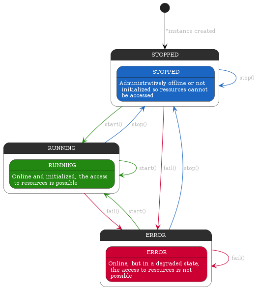

Underlying client type, this is, the real client of the wrapped provider
Port configuration object, could be an extended version of the client config
Implementation of base functionalities of a provider manager
Port wrapper class
Manager configuration options
Optionalconfig: Partial<PortConfig>Port configuration options
ReadonlycomponentProvider unique identifier for trace purposes
ReadonlyconfigPort configuration
Return the status of the connection in a standard format
check object as defined in the draft standard https://datatracker.ietf.org/doc/html/draft-inadarei-api-health-check-05
Port client
Timestamp of actual state in ISO format, when the current state was reached
Provider name
Provider state
Provider status
Add a listener for the error event, emitted when the component detects an error.
Add a listener for the status event, emitted when the component changes its status.
status event
Status event listener
Error state: wait for new state of to fix the actual degraded stated
Cause ot this fail transition
Removes the specified listener from the listener array for the error event.
Removes the specified listener from the listener array for the status event.
status event
Status event listener
Add a listener for the error event, emitted when the component detects an error.
Add a listener for the status event, emitted when the component changes its status.
status event
Status event listener
Add a listener for the error event, emitted when the component detects an error. This is a
one-time event, the listener will be removed after the first emission.
Add a listener for the status event, emitted when the component changes its status. This is a
one-time event, the listener will be removed after the first emission.
status event
Status event listener
Removes the specified listener from the listener array for the error event.
Removes the specified listener from the listener array for the status event.
status event
Status event listener
Provider Manager wraps a specific port created by the extension of the Port abstract class, instrumenting it with the necessary logic to manage:

Param: T
Port class, this is, the class that extends the Port abstract class